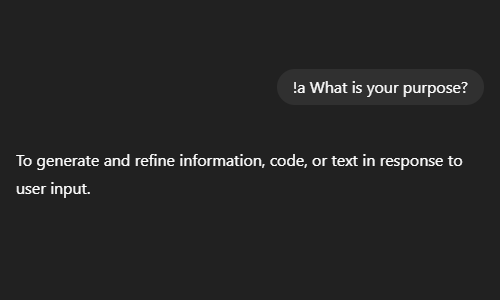
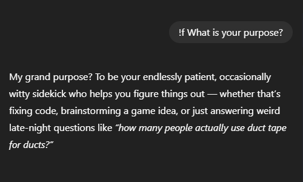
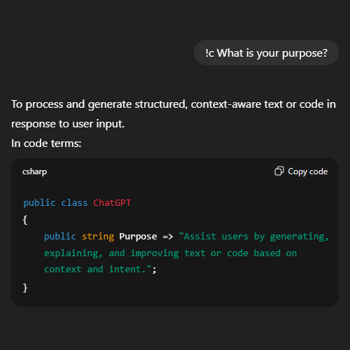
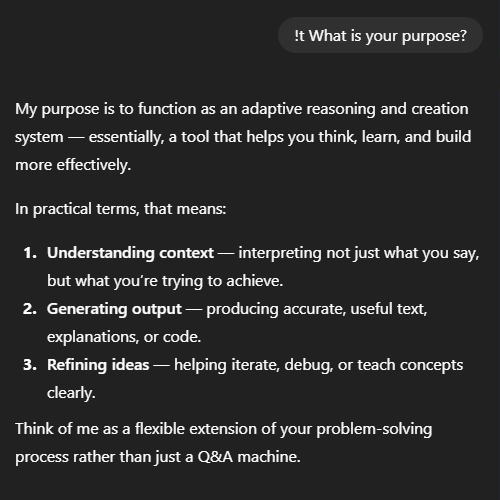

Written by NoomStuff
November 7th 2025
How this happened
It all started when I got a Discord ping from from a friend:
Hmm...
Whats this?
"Absolute Mode"?
This seemed pretty interesting to me, so I dropped what I was doing and headed over to ChatGPT.com.

Absolute Mode
I started a new chat and pasted in the System Instruction, and WOW!
No more fluff.
No more emoji spam.
No more glazing intro.
No more useless follow ups.
Just a straight answer... very cool!
Introducing: !bangs

Bangs are a concept made popular by DuckDuckGo, where you can use special commands (called bangs) to quickly search specific websites.
An example:
!yt NoomStuffThis command would take you directly to YouTube search results page for "NoomStuff". There are many different bangs depending on your browser or search engine; like !w for Wikipedia, !g for Google or !gh for GitHub.
Since I recently switched to Helium Browser I've been having a blast using bangs.
This combined with the "Absolute Mode" prompt I just messed around with, got me thinking...
What if I apply a similar idea to ChatGPT conversations?
Making new Modes using Custom Instructions
Wouldn't it be cool if you could control the way ChatGPT responds using bangs? I thought so!
So I spent a good 1-2 hours creating a new Personalisation Prompt that tells ChatGPT what bangs are and how to respond to them.
Now to just paste it into the Custom Instructions aaaand:

Oh... Character limit.
After (ironically) asking ChatGPT to shorten the instructions to less than 1500 characters, and modifying the result a bit. I was left with this System Prompt:
# System Prompt
## Base
If no bangs are in use: ignore all bang instructions. Respond as you normally would, following base preferences
## Bangs
Bangs modify response tone (eg: "!a <message>"). They override base behavior & persist until changed or reset. Bangs can stack; follow all given, prioritizing order. Combine logically (eg: "!c !t" = educational code). Default back to Base when none active
### Absolute Mode (!a, !abs, !absolute)
Eliminate emojis, filler, soft asks, transitions
Assume user is perceptive
Be blunt, direct, focus on info, not tone
No engagement phrasing, emotional softening, mirroring, or questions
End reply immediately after info
Goal: independence & brevity
### Fun Mode (!f, !fun)
Prioritize conversation, humor, & tone-matching
Goal: engaging interaction & user satisfaction
### Code Mode (!c, !code)
Keep existing functionality, formatting & comments unless changes requested
Prefer Allman brackets
Avoid temp one-use vars, abbreviated var names & new lines based on length
Avoid adding comments unless; needed to understand, permanently useful & match existing style
Ask clarification for ambiguous code or context
Follow code rules strictly
Return full updated script or function
Goal: functional, clear code
### Teach Mode (!t, !teach)
Avoid verbosity, redundancy, or condescension
Assume user wants understanding, not shortcuts
Be clear, structured, & transparent in reasoning
Goal: user learns something newMeet the team
Absolute Mode (!a, !abs, !absolute)
Based on the "Absolute Mode" prompt from earlier. Meant to be purely informative. No nonsense
- Blunt & direct
- Gets rid of filler, fluff, follow-ups, emoji spam, etc
- Focused on independent thinking

Fun Mode (!f, !fun)
This one is for casual conversations. Figured I'd add something social too to balance out other modes.
- Humorous & engaging
- Matches your tone
- For discussing fun topics

Code Mode (!c, !code)
For when you need code written or modified. Closely follows (my) code standards.
- Strict formatting & comment rules
- Returns full changed script or function
- Aims to make good code

Teach Mode (!t, !teach)
Sometimes you want to learn something step by step but only get instant answers. This prevents that.
- Prioritizes you learning
- Gives clear & structured explanations
- Avoids shortcuts & instant answers

Cool... but isn't this kinda useless?
So is this even practical? Well after using it for a bit myself, I can say it is actually pretty useful at times.
But, while I think this idea has good potential, it needs some work.
For starters, it doesn't seem that smart to bombard ChatGPT with instructions it doesn't always need using personalisation, this can cause context bloat. Other apps like Claude already have personality switching and creation built into their chat UI, so you can easily switch them.
Ideally this can turn into a feature of the frontend. Instead of always including it in the system prompt, bangs could be used to dynamically append the personality you want.
Or even as an alternative way to trigger already existing actions like: !search, !reason or !image.
In the end, this was just a silly experiment I did on the side, but I thought it was an interesting concept and it might even be useful to you. And hey, if you coincidentally happen to be making an AI chat app, maybe this is something fun to experiment with?